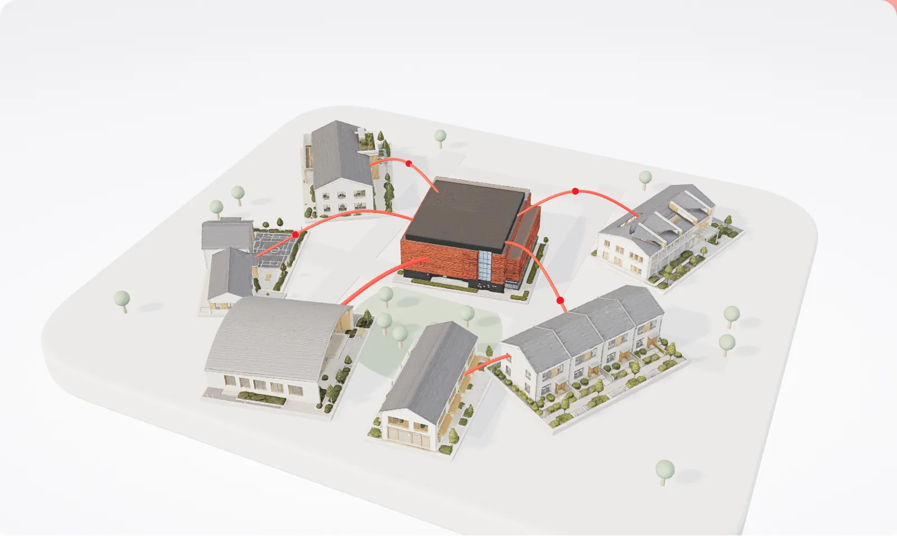

The community
Dive into the stories.
This screen needs WebGL to show the model. The still above is the community at rest.

The community
Dive into the stories.
This screen needs WebGL to show the model. The still above is the community at rest.
Drag to look around